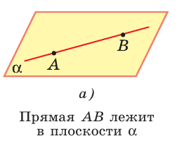
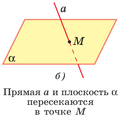
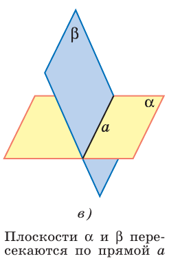
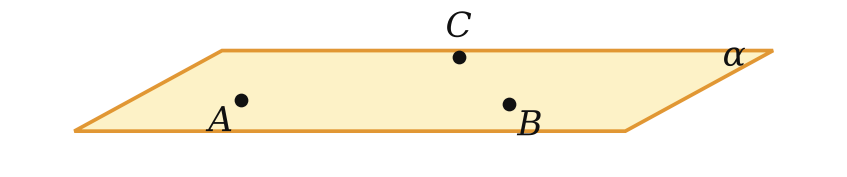
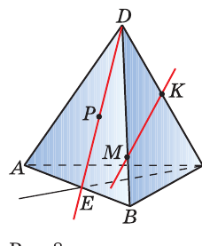
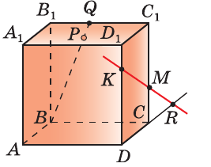

Теория
Чем стереометрия отличается от планиметрии
В планиметрии все фигуры жили в одной плоскости — в тетрадном листе. Стереометрия изучает фигуры в пространстве: куб, шар, пирамида. Главное новое слово — плоскость. Это бесконечная, идеально ровная поверхность без толщины и без края.
Три фигуры считаются основными — им не дают определения, их просто принимают: точка, прямая, плоскость. Всё остальное через них определяется.
Обозначения и как рисовать
- Точки — большие латинские буквы: A, B, C.
- Прямые — маленькие латинские: a, b, или по двум точкам: прямая AB.
- Плоскости — греческие буквы: α (альфа), β (бета), γ (гамма), или по трём точкам: плоскость ABC.
- На чертеже плоскость изображают параллелограммом — это просто условность, кусочек бесконечной плоскости.
- Невидимые линии (те, что «за» фигурой) рисуют штрихом.



Запись: A ∈ α — «точка A лежит в плоскости α»; M ∉ a — «точка M не лежит на прямой a» (зачёркнутый значок — отрицание); a ⊂ α — «прямая a лежит в плоскости α»; a ∩ α = M — «прямая пересекает плоскость в точке M».
Три аксиомы
Аксиома — утверждение, которое принимают без доказательства. Это фундамент: дальше из них выводится всё остальное. Аксиом планиметрии мы не отменяем — они продолжают действовать внутри каждой плоскости. Добавляются три новые.
Через любые три точки, не лежащие на одной прямой, проходит плоскость, и притом только одна.

Модель из жизни: табуретка на трёх ножках никогда не шатается, а стул на четырёх ножках иногда качается. Концы трёх ножек «ловят» ровно одну плоскость пола, а четвёртая ножка может в эту плоскость не попасть.
В аксиоме важны два уточнения:
- «не лежащие на одной прямой» — если три точки лежат на одной прямой, через них проходит бесконечно много плоскостей (как страницы книги через корешок);
- «только одна» — именно это даёт право говорить «плоскость ABC», не уточняя, какая именно.
Если две точки прямой лежат в плоскости, то все точки прямой лежат в этой плоскости.
Модель: приложи линейку к столу двумя точками — она ляжет на стол всей длиной, не выгнется. Плоскость ровная, прямая прямая — за двумя точками следует вся прямая.
Это самый рабочий инструмент урока. В задачах А2 звучит так: «точки M и K лежат в плоскости DBC → значит, по А2 и вся прямая MK лежит в плоскости DBC».
Если две плоскости имеют общую точку, то они имеют общую прямую, на которой лежат все общие точки этих плоскостей.
Модель: раскрытая книга — две страницы пересекаются по корешку. Или стена и пол комнаты: их общая часть — ровная линия, а не точка и не пятно.
Вывод, которым пользуются постоянно: две плоскости не могут иметь ровно одну общую точку. Либо ни одной, либо целая прямая.
Легко по привычке сказать «плоскости пересекаются в точке». Но по аксиоме А3, как только у двух плоскостей появилась одна общая точка, у них сразу появляется целая общая прямая. Поэтому две плоскости пересекаются по прямой, а в точке пересекаются прямая и плоскость.
Два следствия (теоремы 1 и 2)
Аксиома А1 говорит про три точки. Но задать плоскость можно и иначе — и это ровно два случая. Оба доказываются одинаково: сводим к трём точкам.
Через прямую и не лежащую на ней точку проходит плоскость, и притом только одна.
Пусть даны прямая a и точка M ∉ a.
Существование. Отметим на прямой a две любые точки P и Q. Точки M, P, Q не лежат на одной прямой (иначе M оказалась бы на a). По А1 через них проходит плоскость α. В ней лежат точки P и Q прямой a, значит, по А2 в α лежит вся прямая a. Плоскость, проходящая через a и M, найдена.
Единственность. Любая плоскость, содержащая a и M, содержит три точки M, P, Q. А через них по А1 проходит только одна плоскость. Значит, других нет. ∎
Через две пересекающиеся прямые проходит плоскость, и притом только одна.
Пусть прямые a и b пересекаются в точке M. Возьмём на a точку P ≠ M, на b точку Q ≠ M. Точки M, P, Q не лежат на одной прямой. По А1 через них проходит единственная плоскость α. В ней лежат по две точки каждой прямой, значит, по А2 в α лежат обе прямые целиком.
Единственность — как в теореме 1: любая такая плоскость содержит M, P, Q, а плоскость через них одна. ∎
- три точки, не лежащие на одной прямой;
- прямая и точка вне её;
- две пересекающиеся прямые;
- две параллельные прямые (урок 2).
Куб обозначают ABCDA₁B₁C₁D₁: нижняя грань — ABCD, верхняя — A₁B₁C₁D₁, точка A₁ стоит над A, B₁ — над B и т. д. Точки M и K — середины рёбер AA₁ и BB₁.
а) Лежит ли прямая MK в плоскости грани ABB₁A₁? б) По какой прямой пересекаются плоскости ABC и BCC₁?
а) Точка M лежит на ребре AA₁, точка K — на ребре BB₁; оба ребра лежат в грани ABB₁A₁. Две точки прямой MK лежат в этой плоскости, значит, по А2 вся прямая MK в ней лежит. Ответ: да.
б) Точки B и C лежат и в нижней грани, и в боковой грани BCC₁B₁, то есть это общие точки двух плоскостей. По А3 плоскости пересекаются по прямой, на которой лежат все их общие точки, — в том числе B и C. Через две точки проходит только одна прямая, поэтому линия пересечения — прямая BC.
Учимся читать чертёж
Примеры 1 и 2 — тренажёр чтения чертежа. Действуй по шагам:

- Назови все четыре грани тетраэдра: ABC, ADB, DBC, ADC. Это четыре плоскости, с которыми работаем.
- Для каждой отмеченной точки определи, на каком ребре она лежит: E — на AB, M — на DB, K — на DC, P — на DE.
- Точка на ребре лежит сразу в обеих гранях, которым принадлежит ребро.
- Только после этого отвечай на пункты задачи — и к каждому ответу добавляй обоснование: «по А2» или «по А3».

GeoGebra: попробуй сам
Открой geogebra.org/3d (регистрация не нужна) и вводи команды по одной в строку ввода. Модель можно крутить мышью или пальцем.
Опыт 1. Три точки задают плоскость
- A=(0,0,0)
первая точка - B=(4,1,0)
вторая точка - C=(1,3,2)
третья точка — не в плоскости стола - p1=Plane(A,B,C)
плоскость через три точки; покрутите сцену мышью - D=(2,2,3)
четвёртая точка — видно, что она не на плоскости
Перетащите точку C на прямую AB — плоскость «сорвётся» и начнёт вращаться. Это и есть иллюстрация оговорки «не лежащие на одной прямой».
Опыт 2. Две плоскости пересекаются по прямой
- a1=Plane((0,0,0),(5,0,0),(0,5,0))
первая плоскость - b1=Plane((0,0,0),(5,0,0),(0,2,4))
вторая плоскость - l=Intersect(a1,b1)
их пересечение — прямая, а не точка
Опыт 3. Прямая, две точки которой в плоскости
- a1=Plane((0,0,0),(6,0,0),(0,6,0))
плоскость - P=(1,1,0)
точка в плоскости - Q=(4,2,0)
вторая точка в плоскости - l=Line(P,Q)
прямая целиком легла в плоскость — это аксиома А2
Задачи урока
Сначала устно, потом письменно. Решай с обоснованием: на каждый шаг — ссылка на аксиому, теорему или признак.
Тест к уроку
Домашнее задание
Задачи Д1–Д6 ниже, каждый шаг решения — со ссылкой на аксиому А1–А3 или теорему 1–2. Выучить три аксиомы стереометрии и два следствия из них; уметь по памяти перечислить четыре способа задать плоскость.